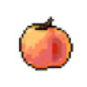

Peachly AIМаркетинг
Сравнивать «Peachly AI» с другими инструментами раздела «Маркетинг» удобнее на одинаковом исходном материале.
Раздел «Для маркетологов»: варианты ИИ для этой задачи, описания возможностей и переходы к обзорам. Сравните несколько решений на одинаковом примере.
Возьмите конкретное обращение и подтверждённые свойства продукта. Молекула поможет сформулировать предложение под задачу покупателя; гипотезы о результате проверяйте на реальных материалах.
Клиент ищет органайзер для узкой полки. По нашим размерам и условиям доставки подготовь сообщение. Отметь, какие размеры покупатель должен сообщить перед выбором модели.


Сравнивать «Peachly AI» с другими инструментами раздела «Маркетинг» удобнее на одинаковом исходном материале.
Pingvin AI превращает селфи в художественные портреты и цифровые аватары. После загрузки фотографии пользователь выбирает визуальный стиль и получает переработанное изображение. Российский сервис представлен через Telegram-бота и веб-страницу, а работа с интерфейсом организована на русском языке.
ProMind создаёт письменные материалы с участием ИИ для разных рабочих задач. Продукт предназначен для копирайтеров и маркетологов, а также менеджеров продукта и облачных консультантов. Эти аудитории используют подготовку контента при рассмотрении своих тем, связывая запрос и нужный формат текстового материала.
Scalenut помогает планировать материалы и писать тексты для поискового продвижения средствами ИИ. В продукте представлены анализ языка и исследовательские функции, а также кластеризация. Шаблоны дополняют создание контента, связывая подготовку темы с рассмотрением структуры и доработкой будущего письменного материала.
Сравнивать «Vidmonials» с другими инструментами раздела «Маркетинг» удобнее на одинаковом исходном материале.
Сравнивать «WriteNow AI» с другими инструментами раздела «Создание текстов» удобнее на одинаковом исходном материале.
«Adflex Ad Intelligence» представлен в разделе «Маркетинг». При выборе проверьте нужную операцию и условия работы с результатом.
Adxl AI использует искусственный интеллект в управлении рекламой на популярных цифровых площадках. Инструмент предназначен для настройки и оптимизации кампаний, объединяя эти задачи в одном продукте. Основное применение связано с привлечением клиентов через рекламу и дальнейшей работой с её параметрами.
Ai Sofiya помогает создавать текст рекламы для Facebook с участием ИИ. Инструмент также преобразует письменный материал в речь. Эти функции предназначены для маркетинга соцсетей, объединяя подготовку сообщения и его звуковой версии при работе пользователя над выбранным способом представления своего контента.
Сравнивать «Astra AI (dan.com)» с другими инструментами раздела «Генерация изображений» удобнее на одинаковом исходном материале.
Для «ChatUp AI» сначала определите свою задачу и требуемый результат. Карточка относится к направлению «Чат-боты и ассистенты».
Для «CopyGenius (copygenius.io)» сначала определите свою задачу и требуемый результат. Карточка относится к направлению «Создание контента».
Для «CyberYozh App» сначала определите свою задачу и требуемый результат. Карточка относится к направлению «SEO-инструменты».
«Firebender» разбирает данные для рабочего анализа. «Firebender» также связан с поиском потенциальных клиентов.
Для «Gamelight» сначала определите свою задачу и требуемый результат. Карточка относится к направлению «Маркетинг».
Сравнивать «HiFive» с другими инструментами раздела «Бизнес» удобнее на одинаковом исходном материале.
Jasper помогает готовить маркетинговые материалы с учётом требований команды к содержанию. Черновик стоит оценивать по адресату и фактам конкретного предложения.
Keyword Catcher помогает исследовать поисковые запросы и результаты выдачи. Инструмент предлагает длинные тематические формулировки ключевых слов, сведения о результатах поиска и структуры будущих публикаций. Его назначение состоит в связывании выбранного запроса с подготовкой материала, когда сначала рассматривается поисковый контекст, а затем намечается содержание текста.
«Pin Generator» помогает с задачами поискового продвижения.
Poper AI создаёт всплывающие окна для сайта с применением ИИ. Конструктор позволяет настраивать этот элемент под сбор адресов почты, подписку или продажу. Пользователь подготавливает окно для выбранного коммерческого сценария, связывая содержание и оформление всплывающего сообщения с задачей конкретной страницы.
Slidy AI готовит презентации на основе введённого текста или загруженного документа. Сервис подбирает структуру слайдов, цветовое решение и расположение содержимого. В браузере предусмотрен редактор, а результат можно сохранять в PPTX, PDF и PNG, связывая генерацию первоначального варианта с его последующей правкой.
«SpaceAI» проверяет признаки происхождения или заимствования текста. «SpaceAI» проверяет языковые ошибки в тексте.
«STORI AI» работает с материалами для социальных площадок.
Syntx AI предоставляет общий доступ к разным нейросетям через веб-интерфейс и Telegram-бота. Среди моделей представлены языковые помощники и средства визуальной генерации. Пользователь выбирает нужный инструмент внутри агрегатора; условия расчётов рассчитаны на российские карты, включая доступные в России платёжные способы.
Tavus создаёт персонализированные видеоматериалы с использованием ИИ-персон. В набор входят воспроизведение лица и голоса, брендированные посадочные страницы и связи с CRM и маркетинговой автоматизацией. Продукт ориентирован на соединение видеообращения с рабочим контекстом клиента, где цифровой образ становится частью подготовленного коммуникационного сценария.
WAN Video создаёт изображения и видео по текстовым запросам и визуальным исходникам. Предусмотрены ролики по фотографии, использование видео-референсов и редактирование, а также звуковое сопровождение. Продукт относится к генеративному направлению Alibaba; способы задания сцены объединяют словесное описание с передачей визуального примера.

Звукограм преобразует текст в речь с помощью нейроголосов, включая варианты на русском языке. В наборе также описаны расшифровка аудио и видео, озвучивание субтитров и извлечение звуковой дорожки из YouTube. Дополняют работу библиотеки музыкальных материалов и звуковых эффектов для подготовки медиапроектов.

AdCreative.ai предлагает подготовку вариантов рекламного материала. Изображение и текст следует оценивать вместе: красивый макет должен корректно передавать свойства предложения.
BlockSurvey помогает готовить опросы с помощью ИИ без написания программного кода. Продукт ориентирован на бизнес и создание опросного материала. Его назначение связано с оформлением способа сбора ответов, когда компания использует инструмент для подготовки опроса, не разрабатывая отдельное приложение самостоятельно.
Chad AI объединяет языковые и творческие модели в русскоязычном окне. Среди направлений представлены тексты, изображения и видео, а также музыкальная генерация. Пользователь работает с разными нейросетями через общий сервис, рассчитанный на доступ из России и оплату российскими картами.
Сравнивать «HypeAuditor» с другими инструментами раздела «Маркетинг» удобнее на одинаковом исходном материале.
Сравнивать «Lander» с другими инструментами раздела «Маркетинг» удобнее на одинаковом исходном материале.
Nayoai создаёт письменные материалы с поисковой тематикой средствами ИИ. Среди форматов есть блоговые публикации и реклама, а также письма и тексты сайта. Шаблоны дополняют подготовку контента, связывая выбранный пользователем канал и задачу сообщения с работой над его содержанием.

Perplexity ищет сведения и собирает ответ с ссылками на найденные материалы. Сервис подходит для первичного исследования вопроса, сравнения условий и подготовки списка источников для проверки.
Pic Copilot создаёт визуальный контент для интернет-магазинов и продавцов маркетплейсов. Предусмотрены товарные изображения, рекламные баннеры и видео, а также показ одежды на ИИ-моделях. Продукт ориентирован на оформление электронной торговли, объединяя несколько видов демонстрационных материалов вместо одного отдельного редактора предметных фотографий.
«TextCraft AI» подготавливает черновик электронного письма.
VLEX AI собирает текстовые, визуальные и голосовые модели в общем веб-интерфейсе. Пользователь обращается к разным нейросетям из одного аккаунта, выбирая инструмент для нужного материала. Сервис ориентирован на российскую аудиторию и поддерживает оплату картой российского банка.

Writesonic связан с подготовкой контента и задачами его видимости в поиске. Рекомендации следует сопоставлять с содержанием страницы и реальными вопросами аудитории.
Zigpoll помогает компании собирать сведения о клиентах через опросы на сайте. Платформа предоставляет правила выбора аудитории и ИИ-помощника. Автоматический анализ дополняет полученные ответы, чтобы команда могла рассматривать собранный материал и использовать его в работе с обратной связью пользователей.
AraMind AI предоставляет набор средств написания текстов с участием ИИ. Инструменты предназначены для публикаций соцсетей и статей с поисковой тематикой. Пользователь может подготавливать эти материалы для своего сайта, связывая выбранный формат и тему с дальнейшей работой над письменным содержанием ресурса.
ChatINFO предоставляет разговорный интерфейс и средства генерации текстов прямо в браузере. Среди задач есть статьи и сочинения, рерайт и проверка написания. Помощь с кодом и творческими материалами дополняет набор инструментов российского сервиса для работы с письменным содержанием пользователя.
Flowpoint AI анализирует поведение посетителей сайта и предлагает рекомендации средствами ИИ. В описании представлены направления SEO и пользовательского интерфейса, а также вовлечение в контент. Продукт связывает сведения о действиях посетителей с рассмотрением изменений сайта при работе команды над его содержанием.
«GetMax» представлен в разделе «Маркетинг». При выборе проверьте нужную операцию и условия работы с результатом.
«Juice AI» помогает с задачами поискового продвижения. «Juice AI» разбирает поисковые запросы для работы с контентом.
Markopolo AI помогает изменять рекламные кампании на площадках Meta, Google и TikTok. Работа включает выбор аудитории и разбор результатов рекламы. Платформа предназначена для организаций разного масштаба, которые хотят вести кампании и рассматривать их показатели в процессе дальнейшей настройки.
«neuroflash (neuroflash.com)» готовит текстовый черновик по условиям задачи.
«Page Pilot AI» составляет текст описания товара.
«Pencil» готовит формулировки рекламного материала.
Страница 2 из 5